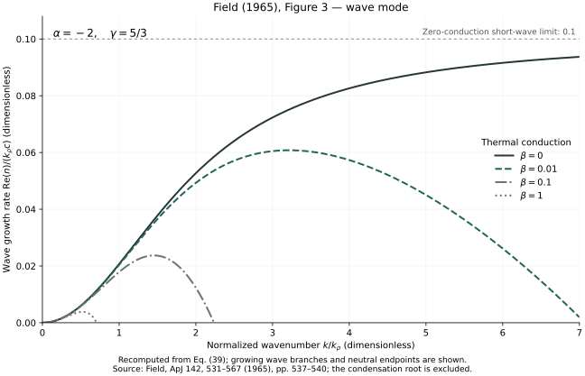

The real part: growth
Write x = ξ + iη, with time normalized by kρc. The real part ξ sets the exponential growth or decay of the disturbance. Positive ξ is an oscillatory instability, also called overstability.
Exhibit 02 / Field 1965 / Figure 3
An oscillation can grow while it travels. Figure 3 follows the real part of the acoustic wave pair in Field’s dispersion relation, with α = −2.
Recomputed and numerically validated. The calculation selects the complex wave pair explicitly: the fastest-growing root belongs to a different mode. No digitized pointwise comparison with the printed curves has been performed.

Growth and oscillation
Write x = ξ + iη, with time normalized by kρc. The real part ξ sets the exponential growth or decay of the disturbance. Positive ξ is an oscillatory instability, also called overstability.
The two conjugate roots have opposite frequencies and equal growth rates. The code keeps the positive-frequency member, η > 0. The figure plots ξ; the CSV retains both ξ and η.
At long wavelengths, Re(x) tends to zero quadratically with q = k/kρ. Without conduction it approaches 0.1 at short wavelengths. Increasing conduction reduces growth and introduces a finite wave cutoff.
Mode selection
As in Figure 2, define x = n/(kρc), q = k/kρ, α = kT/kρ, β = kρ/kK, and s = α + βq². The same dispersion relation applies:
At q = 0, the wave pair tends to x = 0, whereas the condensation root tends to −α = 2. Selecting the root with the largest real part would draw the condensation mode instead of Figure 3. The script identifies the unique root with positive imaginary part and fails if no unique wave pair exists.
Equation (40) provides a separate check on ξ = Re(x):
What a cutoff means
The wave cutoff follows equation (26): qc = √[(−α − 1/(γ − 1))/β] = √(0.5/β). For β = 0.01, 0.1, and 1 this is approximately 7.0711, 2.2361, and 0.7071. The first is just outside the plotted interval.
At the cutoff, s = −1.5 and the cubic factors as (x + s)(x² + q²). The wave roots are purely imaginary, x = ±iq, but the condensation root remains x = 1.5.
The wave mode is damped above its cutoff. This does not imply stability of the whole gas: for these parameters the condensation mode remains unstable until a higher wavenumber.
Reproduce it
Download these four files into the same folder. reproduce.py supplies the shared dispersion relation and fluid matrix; reproduce-wave.py selects and validates the wave pair. The recorded environment used Python 3.9.6, NumPy 2.0.2, and Matplotlib 3.9.4.
python3 -m venv .venv
.venv/bin/python -m pip install -r requirements.txt
.venv/bin/python reproduce-wave.py --output outputNo source PDF, network access, or external input data is needed after installing dependencies. Output includes figures, signed growth rates and frequencies, validation results, and source-code hashes.
Validation and limits
All 24 checks passed in the recorded run. The script stops on a validation failure. Measured errors and tolerances are available in the validation report.
The plotted geometry has been inspected against the scan, but no error relative to digitized original curves is claimed. Peaks are sampled maxima. The β = 0 endpoint at q = 7 is not a physical finite-wavenumber maximum. Magnetic fields, gravity, and nonlinear evolution are outside this calculation.
George B. Field (1965), Thermal Instability, The Astrophysical Journal 142, 531–567. Figure 3, equations (15), (26)–(27), (30), (38)–(40). Original paper at ADS ↗
Compare Figure 2: the condensation mode with α = 1/2 → Figure 1 now places both modes in a common map of stability domains →
Code, explanatory text, and generated-data licenses have not yet been selected. The original paper’s rights are separate.